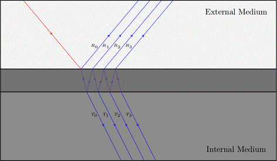

Team 59 - Iridescent Materials Final Report
Bethany Lu, Jose Alfaro, Michael Chou, Aashika Jhawar
Abstract
Iridescence is an important and common optical phenomenon that results from the interference of wave waves, known as thin film interference, to create the shifting colorful effect we see on butterfly wings and CDs. In this project we expanded our Pathtracer project to render iridescent materials. Over the course of the past month we implemented thin film interference by taking into account light as waves instead of vectors to recalculate reflectance. We accomplish this by replacing the Fresnel reflectance term with an estimate that takes into account the reflected and refracted bounces within our thin-film. We then apply the calculated complex reflectance onto BRDF dae. 3d models to demonstrate the varying iridescence materials our model can render.
Technical approach
Overall Derivation + Implementation
Our technical approach began with a lot of research into what iridescent light is and what causes the phenomenon. We identified that iridescence is caused by thin film interference between an external and internal medium. This thin film is a coating over an object within which the light waves reflect and refract repeatedly.

Thin film interference
We were able to find in our research that in order to model that effect we could build upon our existing microfacet BRDF. Looking at the equation of the BRDF evaluation function:
We found that the D(h) value for the normal distribution function that we had implemented using the Beckmann distribution would serve our purposes since we were given the light incident and outgoing directions wi and wo. Furthermore, since we were using the Beckmann distribution, we kept our importance sampling function the same as well. This meant that our main focus was on how to update the Fresnel term.
We decided to update our reflectance term to account for thin film interference. From our research, we were able to find very helpful information on the math to do this from gamedev.net and the slides from Belour and Basca referenced in our resources. Our final derivation and implementation combined their learnings with our background research.
Using Snell’s law, we know that the following holds true:
Using Snell’s law we are able to derive the incident as well as the exiting angles for the wi and wo. Utilizing the incident and exiting angles for our wi and wo, we decided to calculate the transmission coefficient. and using the conservation of energy laws (T + R = 1) to derive the reflectance coefficient.
We began with the fresnel equations:
These equations describe the amplitudes of s and p polarized light for the transmitted and reflected components of our input ray. The r equations account for how much light is reflected while the t equations account for how much light is transmitted. We decided to use the default ratio of 1:1 for s and p polarized light. With this in mind, we created helper functions for these 4 equations in our code.
Using these equations, we are able to derive an equation for calculating the amplitude of waves after successive bounces within the thin film layer. This derived equation is given below:
Where represents the amplitude transmission coefficient of the light wave going from medium x to medium y and represents the amplitude reflectance coefficient of the light wave going from medium x to medium y. K represents the order of the wave bounces with representing the amplitude of the kth transmitted wave.
Now that we have the amplitudes of each transmitted wave, we can simply use these amplitudes to recreate the wave equation and to integrate over them to determine the total transmitted intensity. We still need to account for the phase changes of each wave to account for waves canceling each other out and building upon each other. From our research, we found that the phase of the kth transmitted wave can be found using:
Where λ is the light wave's wavelength and Δ is a constant. To account for the Δ constant, we learned that when any wave reflects off a medium denser than the one it currently occupies, it will experience a 180 degree phase change. This means that we can use the eta values given to us to determine whether the phase change to be accounted for is π or 0. This means that for each wave we can find the Δ for when it passes from the external medium to the thin film and the Δ for when it passes from the thin film to the internal medium and add them together to get the overall phase change.
We are now able to find the amplitude and phase change of each wave. The last step before we can sum these values up is to account for the different mediums the waves are leaving and being transmitted into to ensure that energy is being conserved. We can do this by accounting for the ratio of beam surface area across the two mediums: [n2*cos(θ2)] / [n1*cos(θ0) ]. This value can be multiplied against our final summation to account for the differing mediums.
We can now evaluate our geometric sum to get the following:
And then finally using conservation of energy we can see that IR + IT = 1, or IR = 1 - IT.
To get our reflected intensity (IR) which we use to replace our Fresnel term in our microfacet BRDF model for a single wavelength.
We incorporated this modeling into a helper function to allow us to get the reflectance term for a single wavelength and incident angle and sampled this function 3 times across RGB wavelengths of 614nm, 549nm, and 466nm using the corresponding eta values for the three mediums in order to return our final F() vector.
Problems Encountered
One of the largest problems we faced was determining how to update our dae files to account for thin film interference. We recognized based on our derivation that we needed to include the thickness of the film and the eta values of the film. We first tried to use Blender to update the dae files but found the interface to be quite difficult and instead shifted towards text editing the file. After updating our collada parser to handle these new variables, we saw many unexpected problems appear in our images - most notably high noise levels in our images. After many hours of debugging, we attempted instead to code in the eta and thickness values within a helper function since the RGB wavelengths of the thin film would remain the same across our images since we had identified butanol to be an ideal material. This solution worked well for our renderings but is an ultimately naive solution that we would have liked to improve upon using dae editing.
Another problem we faced was deciding on which implementation to implement based on the various research we conducted on thin film projects. Initially, we intended to pull inspiration from a research paper that talked about replacing the Fresnel term with an airy reflectance term, however after going to many office hours and doing further research on the methodology of implementing airy reflectance, we realized it was much more difficult than we intended. We were unable to calculate certain variables in the model which required much more detailed variables of the light waves and how they reflected against each other in the thin film which we were unable to obtain. We instead opted for calculating the total reflectance based off of some formulas we found off Wikipedia and only required a handful of variables that were easier to derive based on our existing Project 3-2 starter code.
(Initial derivation we had referenced in our milestone)
We also struggled with completing our entire initial mission. In reality, the thin film thickness would not be constant across the entire object. Without varying thickness, we were only able to implement iridescence on opaque objects. Following our presentation, we set out to expand upon our naive implementation to vectorize our approach to account for varying indices of refraction across an image. This would be essential in rendering transparent soap bubbles. Unfortunately, our results fell short and we were unable to see any correct renderings so we chose to limit the scope of our project to iridescent light on opaque surfaces.
Another problem we faced centered on the difficulties of completing group projects in a completely virtual environment. During our zoom meetings, after splitting up parts of research, we struggled a lot with getting on the same page in a timely manner. Not being able to draw our learnings on a whiteboard, pass over our laptops to show our code, and even simply point to what we were specifically trying to ask about during screen shares caused us to spend much more time than we had anticipated explaining our work to each other. We were able to solve this problem by adjusting our original schedule and ultimately limiting the scope of our project.
Lessons Learned
Our group set out to complete a very large project and faced many challenges along the way.
Results
Below are the final renderings we created using the bunny dae and experimenting with different thin film thicknesses. We were able to see the best results when using butanol as a thin film (RBG eta values of 1.3979, 1.4012, 1.4076) with a thickness of 550 nm.
Bunny dae rendered with a butanol thin film thickness of 100 nm.
Bunny dae rendered with a butanol thin film thickness of 1000 nm.
Bunny dae rendered with a butanol thin film thickness of 550 nm.
References/Resources
● Lecture 14: Material Modeling https://cs184.eecs.berkeley.edu/sp21/lecture/14/material-modeling
● Project 3-2 Code - We built upon our existing Pathtracer projects in order to expand its functionality to render iridescent materials.
● A Practical Extension to Microfacet Theory for the Modeling of Varying Iridescence by Laurent Belcour, Pascal Barla: https://hal.archives-ouvertes.fr/hal-01518344/document
○ This paper outlines some of the derivations of reflection and refraction expanding on microfacet materials that we will utilize to build out our BRDF model.
● Paper on wavelength dependent reflectance functions https://www-users.cs.umn.edu/~gmeyer/papers/gondek-meyer-siggraph-1994.pdf
● Paper on rendering iridescent soap bubbles http://www.dgp.toronto.edu/~nmorris/CSC2530/Project/morris.pdf
● Slides from Cornell on textures and raytracing https://www.cs.cornell.edu/courses/cs4620/2017sp/slides/06rt-textures.pdf
●
Game Development paper on thin film interference
https://gamedev.net/tutorials/_/technical/graphics-programming-and-theory/thin-film-interference-for-computer-graphics-r2962/?fbclid=IwAR1qCDQvF4yVyNsg0931QIido8SHfBkEwR8NagYLN6CjV9YMJG3r0y4h8xo
Contributions from each team member
● Bethany
○ Helped research how to render thin film interference, and using this knowledge she was able to create the first part of the code that we submitted for the milestone status report.
○ Completed the milestone video as well as the milestone presentation slides with Jose.
○ Wrote up the abstract and resources for the final webpage.
○ Researched potential dae models and edited dae files using blender to help render our iridescence models.
● Michael
○ Helped with researching thin film and worked on final coding implementation with Aashika.
○ With Aashika, responsible for debugging and testing code.
○ Wrote part of the technical approach for final webpage, as well as added to problems encountered
● Aashi
○ Helped with researching thin film and worked on our final coding implementation with Michael.
○ Wrote the writeup part of our milestone and created the website.
○ Researched and edited the .dae files and updated the collada parser in our first attempt at implementation.
○ Created the final renderings of our results for the bunny and added these slides into the final presentation.
○ Wrote up lessons learned, problems encountered, part of the technical approach, and results for the final webpage.
● Jose
○ Researched methods that can possibly work for iridescent
○ Assessed how dae files worked and made the connection of testing the old bunny and dragon dae files to our new model.
○ Assessed the trigonometry behind the new calculations for reflection index for fresnel termed
○ Helped with all presentations
○ Helped finalizing the understanding of which methods needed to stay untouched and which needed to be changed from original 3-2 project
○ Made final presentation slides and video